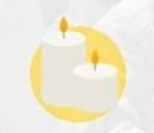
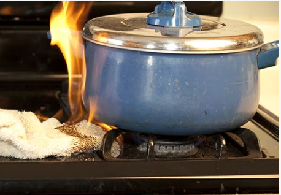
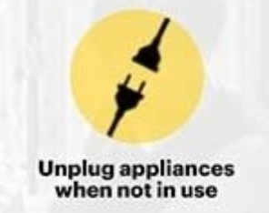
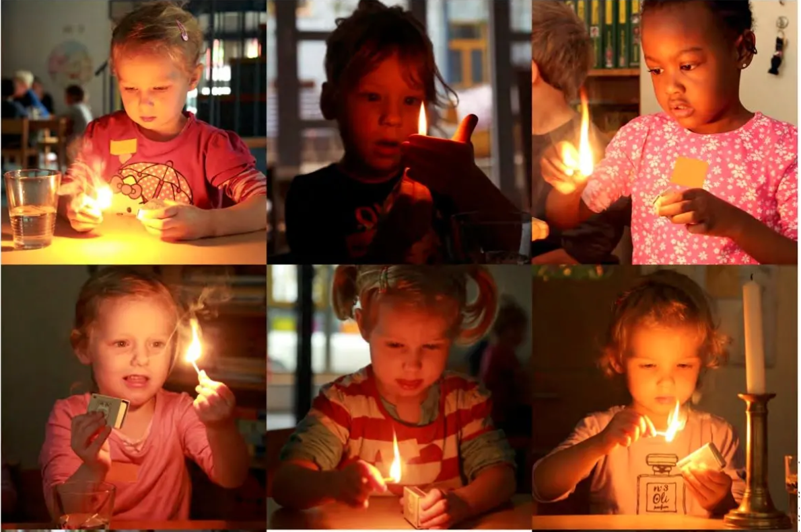

|  Blow out candles/ fire-lit items |
Candles and lanterns are often used for light source however, this can be the cause of fire. Once done using a candle or a lantern, make sure to blow the fire out to prevent fire. |
|  Keep away flamable materials from flames. |
Flames, especially in the kitchen, can spread very easily through curtains, pot holders, and towels. Once these flammable materials make contacts with fire, it can spread very fast. Make sure all flammable items are located in a safe, far corner. |
|  Always check if stoves, ovens, etc. are off. |
Double checking appliances may be hasty and useless sometimes, but this contributes a lot to your safety. By turning it off, your safety will increase a lot more because these appliances may also contribute to fire. |
|  Keep matches, lighters and other fire sources away from chlidren. |
Children are known for being messy and naughty, but it's a different danger when they get their hands on fire. One way to prevent this is to keep all you matches and lighters somewhere they cannot reach like a high shelf or a locked container. |